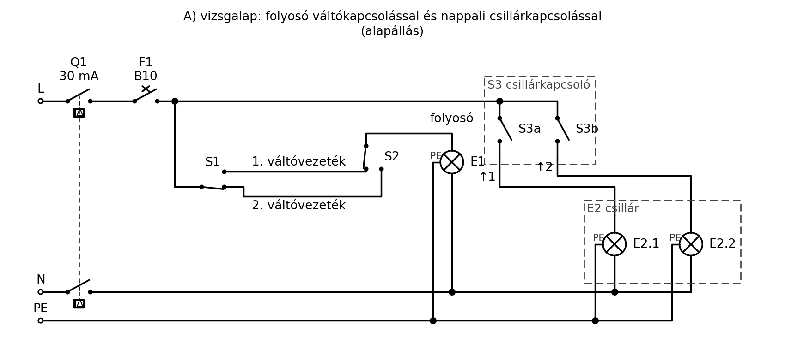

![A vizsgafeladat kapcsolási rajza: 30 mA-es RCD, B10 kismegszakító, egypólusú kapcsoló, lámpa és aljzat, a folytonossági mérési pontokkal - Alapállapot (feszültségmentes, S1 nyitva). Q2 kétpólusú, 30 mA-es, A típusú áram-védőkapcsoló: az L és az N is áthalad rajta (a két pólust a szaggatott vonal köti össze), a PE nem. F1 B10 kismegszakító az L-ben; az L-sínről S1 egypólusú kapcsoló a fázisban → E1 lámpa → N-sín, valamint X1 dugaszoló aljzat L–N. A PE-sínről az E1 fém lámpatestének védőkapcsa és az X1 védőérintkezője kap PE-t (a foglalat menetes része az N-é). M1–M3: a 6. lépés folytonossági mérései. Szemléltető rajz, nem kiviteli terv.](assets/ve158-diagram-1.png)
A kapcsolódó elmélet: tankönyv, 44.3 alfejezet.
Példa. Tekintsük a következő gyakori vizsgafeladatot: építsen meg egy egyfázisú világítási áramkört egypólusú kapcsolóval és egy dugaszoló aljzattal, majd végezzen folytonosság- és szigetelési mérést. A feladathoz a tanműhelyben rendelkezésre áll egy szerelőfal, egy kismegszakító (B10), egy 30 mA-es áram-védőkapcsoló (RCD, A típusú), egy egypólusú kapcsoló, egy lámpa foglalat, egy dugaszoló aljzat, valamint megfelelő keresztmetszetű, színjelölt vezetékek (barna fázis, világoskék nulla, zöld-sárga védővezető). A feladat az áramkör bekötése, a védővezető folytonosságának mérése és a szigetelési ellenállás ellenőrzése.
Biztonsági korlát. A feladat tanműhelyi környezetre vonatkozik; hálózati feszültségen önállóan ne végezd. A vizsgán a feladat feszültségmentes állapotban kezdődik, és a feszültség alá helyezést csak a vizsgáztató engedélyezi.
A vázlat helyes változata alább látható: Q2 kétpólusú áram-védőkapcsolón az L és az N is áthalad, az F1 B10 kismegszakító után az S1 kapcsoló a fázisban, az E1 lámpa és az X1 aljzat az RCD utáni N-sínre csatlakozik, a PE-sínről pedig a lámpatest védőkapcsa és az aljzat védőérintkezője kap védővezetőt. Az M1–M3 jelölés a 6. lépés folytonossági méréseinek helyét mutatja.
Az alábbi három lap egy-egy teljes gyakorló vizsgafeladat. Az értékelés mindegyiknél az egységes rubrika szerint történik (lásd a lenti „Értékelőlap” részt): rajz olvasása és készítése 15, szerelés minősége 25, mérés és jegyzőkönyv 20, működés és működési próba 20, dokumentáció és átadás 10, munkavédelem és rend 10 pont (a súlyok javaslatok, ellenőrizendő: a hatályos vizsgaleírás). Kizáró hiba mindegyik lapon: feszültség alá helyezés engedély nélkül, a védővezető hiánya vagy felcserélése, az öt biztonsági szabály elmulasztása, a védelem kiiktatása, életveszélyes állapot átadása.
1. Feladatszöveg. „A szerelőfalon építsen ki egy B10-es kismegszakítóval és 30 mA-es áram-védőkapcsolóval védett világítási kört: a folyosó E1 lámpáját két helyről (S1, S2 váltókapcsoló), a nappali E2 kétkörös csillárját egy S3 csillárkapcsolóval lehessen kapcsolni. Kötődobozos szerelés, védőcsőben, H07V-U 1,5 mm²-es vezetékkel. Végezze el a folytonosság- és a szigetelésmérést, töltse ki a jegyzőkönyvet.” Időkeret: 180 perc (tanulási javaslat, ellenőrizendő: a hatályos vizsgaleírás). A munka az öt biztonsági szabállyal kezdődik.
2. Rajzcsomag. Az áramúti rajz a Világítási áramkörök: egypólusú, soros, váltó és kereszt (tankönyv, 16.2) alfejezet (16.2) váltó- és csillárkapcsolási rajzából van összeállítva, közös Q1–F1 körre (jelölés: Q1 FI, F1 kismegszakító, S1/S2 váltó, S3 csillárkapcsoló S3a/S3b billentyűvel, E1 folyosói lámpa, E2 csillár E2.1/E2.2 körrel):

A dobozos szerelés a 16.2 csillárkapcsolási dobozrajzát (öt összekötő: L, ↑1, ↑2, N, PE) és a váltókapcsolás dobozos bekötését követi, egyetlen D1 kötődobozzal. Vezetékszámok (PE-vel együtt, ahol van) és a dobozbeli kötések:
| Szakasz | Erek | Érszám |
|---|---|---|
| betáp – D1 | L (barna), N (kék), PE (zöld-sárga) | 3 |
| D1 – S1 | L (barna), v1, v2 (fekete, szürke) | 3 |
| D1 – S2 | v1, v2 (fekete, szürke), L′ (barna jelölésű) | 3 |
| D1 – E1 | L′, N, PE | 3 |
| D1 – S3 | L (barna), ↑1 (fekete), ↑2 (szürke) | 3 |
| D1 – E2 | ↑1, ↑2, N, PE | 4 |
| D1 kötés | Ide kerülő erek |
|---|---|
| L | betáp L + S1 L + S3 L |
| v1 | S1 v1 + S2 v1 |
| v2 | S1 v2 + S2 v2 |
| L′ (folyosó) | S2 közös + E1 fázis |
| ↑1 / ↑2 | S3 ↑1 + E2.1 ; S3 ↑2 + E2.2 |
| N | betáp N + E1 N + E2 N |
| PE | betáp PE + E1 PE + E2 PE |
3. Anyaglista. 2P áram-védőkapcsoló 30 mA, A típus (Q1) 1 db; B10 kismegszakító (F1) 1 db; váltókapcsoló 2 db; csillárkapcsoló 1 db; lámpafoglalat/lámpatest 2 db (E2 kétkörös); kötődoboz 1 db; szerelvénydoboz 3 db; védőcső Ø16/20 mm (hossz a falkiosztásból); H07V-U 1,5 mm² barna, fekete, szürke, kék, zöld-sárga (hossz a falkiosztásból); vezetékösszekötő 8 db; érvéghüvely.
4. Szerszám és műszer. Kétpólusú feszültségvizsgáló, kisohmos folytonosságmérő (≥ 200 mA mérőáram), szigetelésvizsgáló (500 V DC), csupaszoló, krimpelő, csavarhúzók.
5. Önellenőrzési táblázat (feszültségmentesen, fényforrások kicsavarva):
| Mérés | Kapcsolóállás | Várt eredmény |
|---|---|---|
| L (F1 kimenet) – E1 fázispont | S1/S2 négy állása | két állásban folytonosság, kettőben szakadás (bármelyik kapcsoló átbillentése vált) |
| L – E2.1 / L – E2.2 | S3a/S3b négy állása | csak a bekapcsolt billentyű körében folytonosság |
| PE-folytonosság | – | a betáp PE-től E1 és E2 lámpatestig folytonos |
| szigetelés L–PE, N–PE | kapcsolók zárva, fényforrás kiszerelve | a jegyzőkönyvbe a mért érték; a megkövetelt legkisebb érték a szabvány szerint (ellenőrizendő: MSZ HD 60364-6) |
6. Értékelés és tipikus hibák. Az egységes rubrika szerint. Tipikus hibák: a váltóvezeték és a közös pont felcserélése (E1 csak az egyik kapcsolóról kapcsolható); N a kapcsolóban; a PE kimarad a dobozban; a D1-ben hiányzó PE-kötés; a ↑1/↑2 felcserélése a csillárban.
1. Feladatszöveg. „Kösse be egy 0,75 kW-os, 400 V Δ kapcsolású háromfázisú szivattyúmotor direkt indítását önfenntartással, üzem- és hibajelzéssel. A motor adattábláján In = 1,9 A (feladat adata). Végezze el a működési próbát a vizsgáztató engedélyével, mérje a motortekercsek folytonosságát és a szigetelési ellenállást.” Időkeret: 180 perc (ellenőrizendő). A munka az öt biztonsági szabállyal kezdődik.
2. Tervlap. A lap a Direktindítás, önfenntartás és kezelőszervek (tankönyv, 32.1) alfejezet (32.1) VL-01 teljes lapjából van levezetve ugyanazzal a tervlapsablonnal (A változat: F3 zárlatvédelem + F1 hőkioldó; a vizsgapanelen egyszerűsített L1–N 230 V-os vezérlőtáp F2 1P kismegszakítóval):
Olvasd le a tükrökből: melyik oszlopban van a hibajelző érintkező, és mi működteti? (A 6. oszlopban az F1 97–98; az 1. oszlop F1 fűtőeleme.)
3. Vezetéklista (a 32.1 huzalozási listájának formátumában; a vezérlőkör színe a műhely/gyártó konvenciója szerint, ellenőrizendő):
| Potenciál | Honnan | Hová | Szín | Keresztmetszet |
|---|---|---|---|---|
| L1, L2, L3 | betáp | Q1:1, 3, 5 | barna, fekete, szürke | 1,5 mm² |
| – | Q1:2, 4, 6 | F3:1, 3, 5 | barna, fekete, szürke | 1,5 mm² |
| – | F3:2, 4, 6 | K1:1, 3, 5 | barna, fekete, szürke | 1,5 mm² |
| – | K1:2, 4, 6 | F1:1, 3, 5 | barna, fekete, szürke | 1,5 mm² |
| U1, V1, W1 | F1:2, 4, 6 | X1:U1, V1, W1 | barna, fekete, szürke | 1,5 mm² |
| PE | betáp PE | X1:PE → motor | zöld-sárga | 1,5 mm² |
| 1 | Q1:2 (L1) → F2:1; F2:2 | F1:95, K1:23, F1:97 | vezérlő | 0,75–1 mm² |
| 2 | F1:96 | S0:11 | vezérlő | 0,75–1 mm² |
| 3 | S0:12 | S1:13, K1:13 | vezérlő | 0,75–1 mm² |
| 4 | S1:14, K1:14 | K1:A1 | vezérlő | 0,75–1 mm² |
| 5 | K1:24 | H1:X1 | vezérlő | 0,75–1 mm² |
| 6 | F1:98 | H2:X1 | vezérlő | 0,75–1 mm² |
| N | betáp N | K1:A2, H1:X2, H2:X2 | világoskék | 0,75–1 mm² |
4. Anyag és eszközök. Q1 főkapcsoló 3P; F3 zárlatvédelem 3P (érték a gyártói koordinációs táblázat szerint, ellenőrizendő); F2 1P C2 kismegszakító; K1 mágneskapcsoló AC-3, 230 V AC tekercs, 13–14 és 23–24 záró segédérintkezővel; F1 hőkioldó 1,6–2,5 A-es tartománnyal; S0 (piros, bontó), S1 (záró); H1, H2 jelzőlámpa (színek: ellenőrizendő MSZ EN 60204-1, MSZ EN 60073); X1 sorkapocs; motorkábel 4 × 1,5 mm² (3 fázis + PE); motor.
5. Ellenőrzés feszültségmentesen. A motortekercsek (U1–U2, V1–V2, W1–W2) ellenállása közel azonos legyen – a jegyzőkönyvbe a ténylegesen mért értékek kerülnek (az üres mezőt nem töltjük ki becsült számmal); szigetelésmérés a tekercsek és a test között 500 V DC-vel; a vezérlőkör kicsengetése: F2 kimenete és K1:A1 között az S1 megnyomásakor folytonosság; a K1 kézi benyomásakor a 13–14 zár.
6. Működési próba (a vizsgáztató engedélyével). START → a K1 behúz, a H1 világít; STOP → a K1 elenged; az F1 TEST gombja → a K1 elenged, a H2 világít; a forgásirány a szivattyú nyila szerint (ha fordított: feszültségmentesen két fázis cseréje a motor felé). A HTML-kiadásban a lap szimulációja ugyanezt a sorrendet játssza le.
7. Értékelés az egységes rubrika szerint; kizáró hibák a fent felsoroltak.
1. Feladatszöveg. „Egy négykörös oktatási lakáselosztó-modellen (a Lakáselosztó építése és bekötése (tankönyv, 40.2), 40.2 modelljéhez hasonló: Q2 áram-védőkapcsoló 40 A / 30 mA, A típus; F1 B16 aljzatkör, F2 B16 fürdőszobai aljzat, F3 B10 világítás, F4 C16 bojler) végezze el a védelmi méréseket a vizsgáztató engedélyével, töltse ki a jegyzőkönyvet, és minősítse a köröket.” Időkeret: 120 perc (tanulási javaslat, ellenőrizendő: a hatályos vizsgaleírás). A munka az öt biztonsági szabállyal kezdődik.
2. Mérési sorrend (a mérőpontok és a határok a Védelmi mérések gyakorlata (tankönyv, 42.2), 42.2 gyorsreferenciája szerint): (1) szemrevételezés; (2) PE-folytonosság (feszültségmentesen, ≥ 200 mA mérőáram); (3) szigetelési ellenállás (500 V DC, fogyasztók és érzékeny eszközök leválasztva); csak ha ezek megfeleltek, a vizsgáztató engedélyével, megfelelő kategóriájú műszerrel feszültség alatt: (4) hurokimpedancia ; (5) FI-próba (próbagomb, ½×, 1×, 5× ).
3. Jegyzőkönyv-sablon (a fejlécbe: felülvizsgáló, berendezés, műszer és kalibrálás, dátum, alkalmazott korrekció):
| Kör | Megnevezés | Véd. | FI | Vezeték, | L–N / L–PE / N–PE (MΩ) |
|---|---|---|---|---|---|
| F1 | |||||
| F2 | |||||
| F3 | |||||
| F4 |
| Kör | (Ω) | mért → korr. (Ω) | (Ω) | (A) | Értékelés |
|---|---|---|---|---|---|
| F1 | |||||
| F2 | |||||
| F3 | |||||
| F4 |
| FI | ½ | Rámpa | 0°/180° | Próbagomb | Ért. | ||
|---|---|---|---|---|---|---|---|
| Q2 |
4. Kiértékelő gyakorlat. Egy vizsgázó az alábbi értékeket rögzítette (gyakorló adatok, nem mérési eredmények). Értékeld körönként: megfelel-e, ha nem, mi a következmény és a teendő? A megoldás a „Megoldások” alatt van.
| Kör | Rögzített adat |
|---|---|
| F1 (B16, 2,5 mm², 40 m) | = 0,35 Ω; > 200 MΩ; = 0,92 Ω |
| F2 (B16) | = OL (szakadás) |
| F3 (B10) | L–PE = 0,6 MΩ |
| F4 (C16) | > 200 MΩ; = 1,6 Ω |
| Q2 (30 mA) | kioldási idő -nél 23 ms |
5. Értékelés a lenti „Értékelőlap” szerint (ennél a lapnál a mérés és a dokumentáció a fő rész); kizáró hibák a fent felsoroltak.
Cél. Az A), B) és C) feladatlap bármelyikét vizsgakörülmények között, időre, biztonságosan és dokumentálva végrehajtani.
Eszközök és anyagok: a választott feladatlap anyag- és szerszámlistája, kétpólusú feszültségvizsgáló, kisohmos folytonosságmérő, szigetelésvizsgáló, a feladat szerinti installációs vizsgáló, jegyzőkönyv, óra, értékelőlap.
Biztonsági korlát. A feladat tanműhelyi környezetre vagy jogosult oktató felügyeletére vonatkozik; hálózati feszültségen önállóan ne végezd.
Az öt biztonsági szabály (a munka kezdetén, a vizsgáztató előtt kimondva): 1. lekapcsolás; 2. visszakapcsolás elleni biztosítás; 3. feszültségmentesség ellenőrzése; 4. földelés és rövidre zárás (ahol előírt); 5. a szomszédos feszültség alatti részek lefedése vagy elhatárolása.
Lépések.
Ellenőrzési pontok: a 3. lépés után minden kapocsnak van jele; az 5. lépés után a mért folytonosságok a feladatlap várt eredményeivel egyeznek; a 7. lépés után minden funkció teljesül; a végén a jegyzőkönyv kitöltött és aláírt. A 180 perces időterv (tankönyv, 44.3) a próbán betartandó keret.
Tipikus hibák (és kizáró hibák). Gyakori: a vázlat kihagyása, a mérés elhagyása időhiány miatt, becsült érték beírása. Kizáró (az értékelőlap szerint): feszültség alá helyezés engedély nélkül; a védővezető hiánya vagy felcserélése; az öt biztonsági szabály elmulasztása; a védelem kiiktatása; életveszélyes állapot átadása.
Dokumentálás: a kitöltött jegyzőkönyv, a jelölt rajz, az értékelőlap (önértékelés és társ értékelése) és egy rövid hibanapló a következő próbához.
1. feladat (A) Nevezd meg a gyakorlati vizsgafeladat négy fő típusát, és mindegyikhez adj egy-egy konkrét példát a tanműhelyi gyakorlatból.
2. feladat (A) Rajzold fel egy egypólusú kapcsolóval vezérelt lámpa áramúti rajzát L1, N és PE jelöléssel, és írd a vezetékek színjelölését.
3. feladat (B) Egy vizsgafeladatban a tanuló a következő mérési eredményeket kapta feszültségmentes állapotban: PE sín – lámpatest védőcsatlakozója között 0,2 Ω; L1 fázissín – kapcsoló kimenete között nyitott kapcsolónál OL (szakadás), zárt kapcsolónál ≈ 0,3 Ω; N sín – aljzat nulla csatlakozó között OL. Melyik mérési eredmény utal hibára, és mi lehet a hiba?
4. feladat (B) Írd le a feszültségmentesítés öt biztonsági szabályát, és indokold meg, miért fontos mindegyik a vizsgafeladat során.
5. feladat (C) Egy motorvezérlő vizsgafeladatban a direkt indítású aszinkron motor a bekapcsolás után nem forog, de a mágneskapcsoló behúz, és a kismegszakító nem old le. Sorold fel a lehetséges hibákat, és írd le, milyen mérésekkel különböztetnéd meg őket.
6. feladat (D) A vizsgafeladatban egy hibás áramkört kapsz: a lámpa világít, de a dugaszoló aljzatból hiányzik a védőérintkező. Milyen méréssel igazolod a védővezető hiányát, és mi a biztonsági következménye? Hogyan javítod?
Önellenőrzés – válaszok:
C) feladatlap – a kiértékelő gyakorlat megoldása (határok: ; B16: , C16: ; minden határérték ellenőrizendő: MSZ HD 60364-4-41, -6, MSZ EN 61008-1)
| Kör | Minősítés | Indok és teendő |
|---|---|---|
| F1 | megfelel | a számított nagyságában (kötésekkel); ≥ 1 MΩ; = 0,92 Ω < 2,88 Ω (a 0,8-szorosára, 2,30 Ω-ra korrigált határ alatt is) |
| F2 | nem felel meg | PE-szakadás: a kör nem helyezhető üzembe, feszültség alatti mérést el sem kezdesz; a szakadás behatárolása, javítás, majd a teljes méréssor |
| F3 | nem felel meg | L–PE 0,6 MΩ < 1 MΩ (tanulási határ): a hiba behatárolása (lámpatest, doboz, vezeték), javítás, újramérés; addig nem helyezhető feszültség alá |
| F4 | nem felel meg | = 1,6 Ω > 1,44 Ω: a C16 pillanatkioldása hiba esetén nem biztosított. Megoldás: a bojler ohmos terhelés, indítási áramlökése nincs, ezért B16 választható (2,88 Ω, korrigálva 2,30 Ω – megfelel), vagy nagyobb keresztmetszet; hogy a FI a hibavédelemben figyelembe vehető-e, a szabvány szerint ellenőrizendő (MSZ HD 60364-4-41) |
| Q2 | megfelel (ez az adat alapján) | 23 ms ≤ 300 ms -nél; a teljes minősítéshez a ½×, 5× próba és a próbagomb eredménye is kell |
Hibakeresési feladatbank – megoldások (javítás mindig feszültségmentesen, utána a mérés megismétlése és a működési próba)
| # | Ok | Javítás |
|---|---|---|
| 1 | az S1-en a közös kapocs (betáp L) és egy váltókapocs vezetéke felcserélve | L a közös kapocsra; mind a négy kapcsolóállás kipróbálása |
| 2 | a ↑2 ér szakadt a doboz és E2 között (pl. kicsúszott ér az összekötőből) | kötés helyreállítása, húzáspróba |
| 3 | a védővezető nincs bekötve vagy szakadt; az FI ezt nem pótolja | PE bekötése, folytonosságmérés a PE-síntől |
| 4 | N–PE összekötés a FI utáni oldalon (dobozban, sérült érnél) | az összekötés megszüntetése, N–PE szigetelésmérés, FI-próba |
| 5 | zárlat a kapcsolt ér és az N között (foglalat, lámpatest bekötése) | a foglalat vagy a kötés javítása, szigetelés- és ellenállásmérés |
| 6 | hiányzó önfenntartó vezeték S1:13 és K1:13 között (a segédérintkező jó) | vezeték bekötése; behúzott K1-nél folytonosság |
| 7 | az F1 hőkioldó leoldott (vagy a 95–96 hibás) | a túlterhelés okának megkeresése, beállítás ellenőrzése, csak utána reset |
| 8 | a K1 középső főérintkezője (3–4) nem zár: fáziskiesés | a mágneskapcsoló cseréje; a motor és az F1 ellenőrzése |
| 9 | a K2 főkörében hiányzik a fázissorrend-csere | K2-nél L1 és L3 felcserélése a rajz szerint (L1→W1, L3→U1); próba először motor nélkül |
| 10 | a K3 ágában a K2 21–22 retesz hiányzik vagy áthidalták (K2 és K3 együtt húzhat) | retesz helyreállítása mindkét ágban, az időrelé és az átkapcsolási szünet ellenőrzése; próba először főkör nélkül |
Feladatok megoldásai
1. feladat (A)
A négy típus:
- Szerelési feladat: pl. világítási áramkör építése
egypólusú kapcsolóval.
- Vezérlési feladat: pl. direkt indítású motorvezérlés
önfenntartással.
- Mérési feladat: pl. szigetelési ellenállás mérése 500
V DC-vel.
- Hibakeresési feladat: pl. előre meghatározott
szakadás megkeresése és javítása.
2. feladat (A)
A kapcsolási rajz szöveges leírása: L1 fázis – F1 kismegszakító – S1
egypólusú kapcsoló – E1 lámpa; N nulla – E1 lámpa másik kapcsa (a
foglalat menetes része); PE – E1 lámpatest (fém burkolat)
védőcsatlakozója. A vezetékek színe: L1 barna, N világoskék, PE
zöld-sárga. A kapcsolóba csak a fázis megy be; a nulla közvetlenül a
lámpához csatlakozik.
3. feladat (B)
Az N sín és az aljzat nulla csatlakozója közötti OL mérés szakadást
jelez, tehát a nulla vezeték nincs bekötve vagy megszakadt. Ez hibás,
mert az aljzat nem fog működni. A hiba oka lehet rossz bekötés, laza
kapocs vagy hibás vezeték. Javítás: feszültségmentes állapotban a nulla
vezetéket a megfelelő csatlakozóba kötjük, és újra mérjük a
folytonosságot.
4. feladat (B)
Az öt biztonsági szabály:
1. Lekapcsolás: a hálózat leválasztása a munkavégzés
helyén.
2. Visszakapcsolás elleni biztosítás: a kapcsoló
lezárása, kitáblázása, lakatolása.
3. Feszültségmentesség ellenőrzése: megfelelő
feszültségvizsgálóval minden fázis és nulla ellenőrzése.
4. Földelés és rövidre zárás: ha a feladat megköveteli,
a munkaterület közvetlen közelében.
5. Szomszédos feszültség alatti részek lefedése: az
érintésvédelem és a véletlen érintés megakadályozása.
Mindegyik azért fontos, mert a feszültség alatt végzett munka áramütést
okozhat; a sorrend betartása biztosítja, hogy a munkavégzés közben ne
kerüljön feszültség a berendezésre.
5. feladat (C)
Lehetséges hibák:
- A motor kapocsdobozában a csillagpont bekötése hibás: a csillaghíd
hiányzik (ekkor nincs áram, a motor nem zúg), vagy csak két tekercsvéget
köt össze (ekkor a motor zúg, nem indul, gyorsan melegszik). A
forgásirányt csak a fázissorrend befolyásolja, a csillagpont nem.
- A motorvédő kapcsoló (a főkörben) leoldott, vagy a beállítási érték
nem megfelelő (a 95–96 hőkioldó-érintkező leoldásakor a mágneskapcsoló
sem húzna be, ez a tünettel ellentétes).
- A mágneskapcsoló főérintkezői nem zárnak rendesen (pl. szennyezett
vagy sérült érintkező).
- A motor tekercse szakadt, vagy a tápfeszültség nem jut el a
motorig.
Mérések: feszültségmérés (csak jogosult, CAT III műszerrel, vizsgáztatói
engedéllyel) a mágneskapcsoló kimenetén (a motor felé) a fázisok között;
folytonosságmérés a motor kapcsain (U1–U2, V1–V2, W1–W2)
feszültségmentes állapotban; a motorvédő kapcsoló bemeneti és kimeneti
feszültségének ellenőrzése. A mágneskapcsoló érintkezőinek
folytonosságmérése is szükséges.
6. feladat (D)
A védővezető hiányát folytonosságméréssel igazoljuk: a dugaszoló aljzat
védőcsatlakozója és a PE sín között a mérés OL-t mutat, ha a védővezető
szakadt vagy elmaradt. A biztonsági következmény: az aljzatba
csatlakoztatott I. osztályú készülék testzárlata esetén a hibaáram nem
tud elfolyni, a készülék teste feszültség alá kerülhet, és áramütés
veszélye áll fenn. Javítás: feszültségmentes állapotban a zöld-sárga
vezetéket be kell kötni az aljzat védőcsatlakozójához és a PE sínhez,
majd a folytonosságot újra mérni.